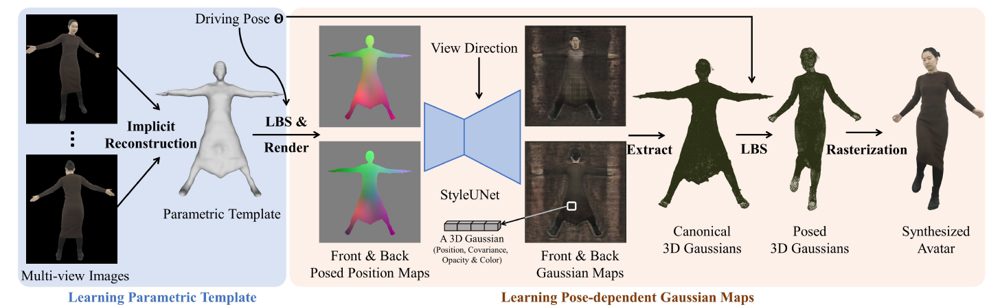

Animatable Gaussians: Learning Pose-dependent Gaussian Maps
for High-fidelity Human Avatar Modeling
概述
任务：从RGB视频中建模可动画化的人物（animatable human avatars）。
目前的工作一般采用基于MLP的NeRF表示3D人物，但是对于纯MLP来说，回归依赖于姿势的服装细节是很困难的。本文引入了Animatable Gaussians，一种新的avatar表示，用2D CNNs和3D Gaussian Splatting来创建avatar。为了把3D Gaussians和animatable avatar联系起来，从输入视频中学习参数化模板，然后在前后两个canonical Gaussian maps的模板上进行参数化，其中，每个像素表示一个3D Gaussian。学到的模板可以适用于服装，比如裙子一类较为宽松的衣服。模板引导的2D参数化使基于StyleGAN的CNN能学到依赖于姿势的服装动态细节。另外，本文提出了一个姿势投影策略，达到更好的泛化性。
Introduction
显式的3D表达（mesh和点云）需要稠密重建的mesh才能得到较好的人物几何，在稀疏视角、基于视频的人物建模上的应用有限。NeRF出现之后，很多研究者将3D人物表示成pose-conditioned NeRF，但是这种隐式表示需要基于坐标的MLP对一个连续场进行回归，而MLP会产生低频光谱偏差（low-frequency spectral bias）。后来有许多工作用纹理特征或structured local NeRFs增强avatar的表示，但都无法取得满意的结果。
3D Gaussian Splatting是一种高效且显式的基于点的表示（explicit point-based representation）。相比于隐式表达，explicit point-based representation可以在2D maps上进行参数化，因此可以使用更强大的2D网络建模。
本文提出的Animatable Gaussians用2D CNNs和3D Gaussian Splatting来创建avatar。首先，为了解决服装（包括长裙）建模的难题，作者从视频中重建一个参数化模板（parametric template），通过扩散蒙皮权重（skinning weights）继承SMPL的参数。这样做的好处是可以根据模板的运动使3D gaussians动画化，同时避免在标准Gaussians中的密度控制，确保在接下来的2D参数化中保持3D Gaussians的时间一致结构（temporally consistent structure）。
为了与2D网络兼容，有必要将3D模板参数化到2D map上。然而，将具有任意拓扑结构的模板展开到统一而连续的UV空间仍然具有挑战性。考虑到正反视图几乎覆盖整个标准人体，我们通过将标准模板在两个视图中进行正交投影来实现参数化。在每个视图中，我们将模板掩码内的每个像素定义为一个3D Gaussian，由其位置、协方差、不透明度和颜色属性表示，从而产生两个正反Gaussian map。同样，考虑到运动姿势，我们获得两个posed position maps，作为姿势条件（pose condition）。这样的模板引导参数化使得能够通过基于StyleGAN的条件生成器StyleUNet从姿势条件中预测依赖于姿势的高斯图。
另一方面，对于新颖的姿势，可动画化角色的泛化尚未得到广泛探讨。由于基于学习的角色建模具有数据驱动的特性，对于分布之外的姿势直接外推肯定会产生令人不满意的结果。本文提出使用主成分分析（PCA）将由position map表示的驱动信号投影到PCA空间中，促使在训练姿势的分布内进行合理的插值。
方法
